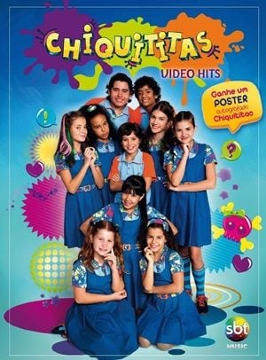

"Chiquititas" é uma das novelas mais populares e marcantes da televisão brasileira, especialmente para o público infantil. Originalmente exibida pelo SBT (Sistema Brasileiro de Televisão), a primeira versão foi ao ar em 1997 e fez muito sucesso, tanto que teve várias regravações e remakes ao longo dos anos.
A novela foi criada por Íris Abravanel, esposa do fundador do SBT, Silvio Santos, e foi baseada em um formato argentino também chamado Chiquititas, que já tinha feito sucesso em outros países.
A história de "Chiquititas" gira em torno de um grupo de crianças que vivem em um orfanato chamado Raio de Luz, localizado em São Paulo. Cada uma delas tem uma história de vida emocionante e, muitas vezes, triste, mas juntas elas criam um ambiente de amizade e amor. A trama se desenrola com momentos de muita emoção, comédia e também algumas lições de vida.
Personagens como a doce Mili (interpretada por Fernanda Souza) e o corajoso Junior (interpretado por Guilherme Boury) marcaram gerações de telespectadores. Além disso, os "Chiquititos" — como eram chamadas as crianças do orfanato — tinham músicas que ficaram muito populares, como a música-título da novela, "Chiquititas", que sempre era cantada por elas.
A trama se desenrola com temas como o abandono familiar, a amizade, o amor e a importância de lutar por um futuro melhor. Além disso, também explorava a relação com os adultos que passavam pela vida das crianças, como as figuras da Dona Neco e da Carmen, que eram algumas das responsáveis pelo orfanato.
Outro grande marco de "Chiquititas" foram as várias versões que a novela ganhou, incluindo uma versão mais recente que começou a ser exibida em 2013, com um novo elenco e uma roupagem mais moderna, mas mantendo a essência da história. Essa versão também foi um grande sucesso e apresentou novas músicas e enredos, mantendo o espírito da série original.
Músicas: As canções da novela eram uma das suas maiores atrações, com várias músicas que se tornaram hits, como "Chiquititas", "Rato", "Quero Mais" e muitas outras que marcaram a infância de muitos brasileiros.
